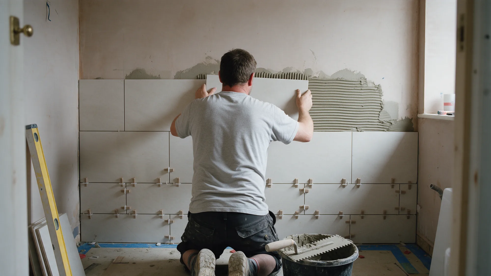
Generated photoWall and floor tiling · South Lakes
Anybody can stick a tile on.
The job is where the cuts land.
Bathroom walls and floors, kitchen splashbacks, large format porcelain, natural stone, regrouting and resealing, and outdoor porcelain. Set out from the centre, waterproofed behind the tile, and sealed in every corner that moves.
The set out
Same wall, same tile, twenty minutes apart.
This is the part of tiling that happens before anything gets stuck to anything, and it is the only decision on a tiled wall that cannot be put right afterwards. Here is the same bathroom wall done both ways.
First full tile against the corner
Quickest way to start and the most common. The trouble is that a wall is never a whole number of tiles wide, so whatever is left over all lands at the far end in one piece. Here that is about twelve millimetres. A sliver that thin chips when you cut it, will not hold grout properly, and sits at the doorway where everybody walks past and looks straight down the wall.
Centre line struck first, cuts shared
Same wall, same tile, same number of tiles. The leftover is halved and a cut of over half a tile lands at each end instead. That cuts clean, grouts properly and reads as deliberate from anywhere in the room. It costs twenty minutes with a tape and a pencil before anything is mixed, and it is the single decision on a tiled wall that cannot be put right afterwards.
Drawn in the browser rather than photographed. Both walls are the same width and carry the same number of tiles.
What we do
Six kinds of job.
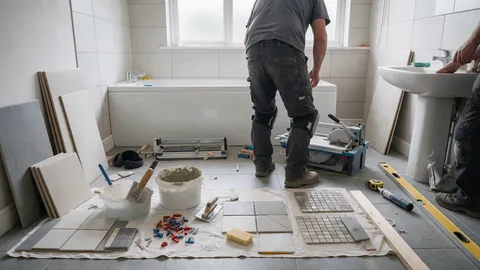
Generated photoBathroom wall and floor tiling
Walls and floors, set out from the middle so the cuts land where nobody looks, and waterproofed behind the tile rather than relying on the grout to do it.
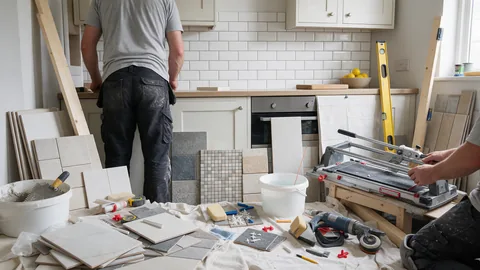
Generated photoKitchen splashbacks
The strip of wall between the worktop and the units, which is small, awkward, full of sockets and the one bit of tiling people stand two feet away from every day.
 Generated photo
Generated photoLarge format and porcelain tiles
Big thin porcelain, two pairs of hands and a suction frame. The tile is the easy part. Getting the wall flat enough for it is the job.
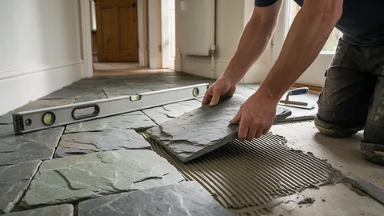
Generated photoNatural stone tiling
Slate, limestone, travertine and marble. Heavier, thirstier and more variable than porcelain, so it wants sealing, sorting and a floor that can carry it.
 Generated photo
Generated photoRegrouting and resealing
Old grout raked out and replaced, the internal corners taken back to bare and resealed. The cheapest job on this list and often the only one a bathroom needs.
 Generated photo
Generated photoOutdoor porcelain tiling
Patios and paths in outdoor grade porcelain, on a full mortar bed with a fall away from the house, because outside it is the water and the frost that decide how long it lasts.
How it works
Four steps, and a straightedge on the wall first.
You tell us the job
A call, the chat box or the form. Which room, what is on the wall now and roughly what you want instead. Photographs help more than measurements, because we would rather see the state of the wall than be told an area.
Somebody comes and looks
A straightedge on the walls and the floor, a knuckle tapped along anything already tiled, a look at the ventilation and at what is behind the plasterboard where a shower has been. Twenty minutes to half an hour, and it is the part that decides whether the quote is honest.
You get it in writing
What is coming off, what is going on, what the preparation involves, what the tile is, what is going away and what is not included. Separate lines, so you can hold it against anybody else's.
We strip, prep, set out and tile
Doorway sealed, floors sheeted, cutting outside where the weather lets us, and the floor vacuumed at the end of each day rather than the end of the job Sample.
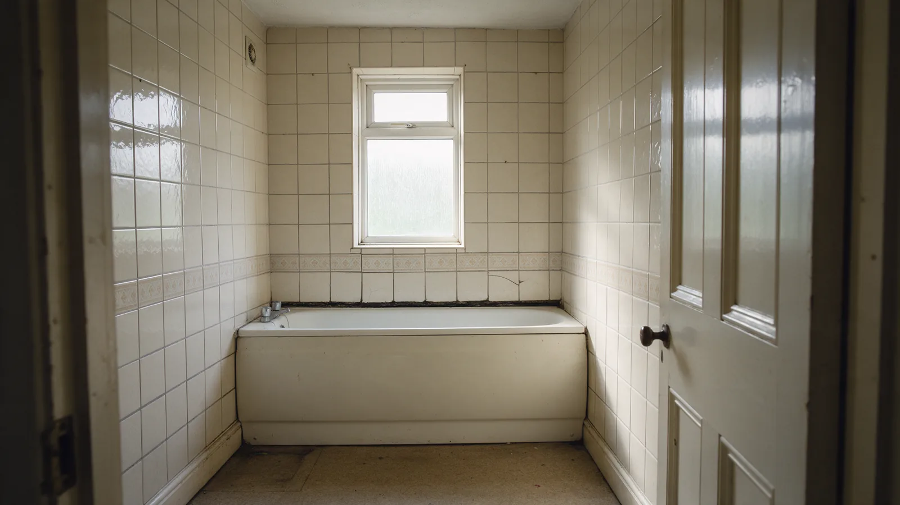
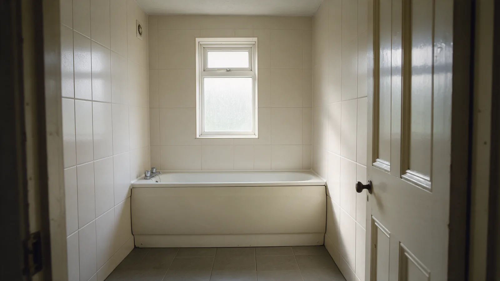
Illustrative, not a real job. Both pictures were generated for this demo from the same bathroom, so the window, the bath and the door are in the same place in each.
Before and after
Look at the joints, not the colour.
Drag the slider. It is the same small bathroom both times, the same bath under the same window, and the tile is not even a wildly different colour. What changed is everything people say they cannot put their finger on.
The border strip at waist height has gone, which is what dated the room more than anything. The joints are even and the same width all the way across instead of wandering. The black line along the top of the bath, which was grout that cracked years ago and then grew mould in the crack, is a clean flexible sealant bead. The filthy junction where the tile met the floor is now a tiled floor that runs under it. None of that is a more expensive tile. All of it is the preparation, the set out and knowing which joints move.
See the rest of the workOur work
Sample jobs.
16 jobs
 Generated photoHalf way up the wallKendal · Sample
Generated photoHalf way up the wallKendal · Sample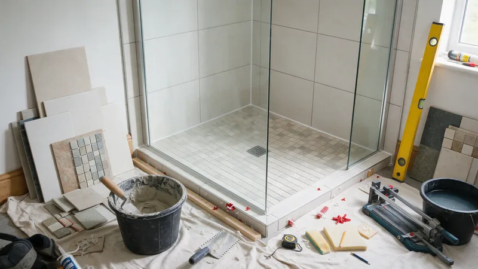
Generated photoA walk in, floor to ceilingWindermere · Sample Generated photoWalls and floor in one goUlverston · Sample
Generated photoWalls and floor in one goUlverston · Sample Generated photoMosaic, following the fallKendal · Sample
Generated photoMosaic, following the fallKendal · Sample Generated photoWaterproofed before a tile went near itGrange-over-Sands · Sample
Generated photoWaterproofed before a tile went near itGrange-over-Sands · Sample Generated photoA splashback in brick bondKirkby Lonsdale · Sample
Generated photoA splashback in brick bondKirkby Lonsdale · Sample Generated photoCuts following the unitsKendal · Sample
Generated photoCuts following the unitsKendal · Sample Generated photoTwo pairs of hands and a frameWindermere · Sample
Generated photoTwo pairs of hands and a frameWindermere · Sample Generated photoCombed out, clips inUlverston · Sample
Generated photoCombed out, clips inUlverston · Sample Generated photoHeating in, membrane downKendal · Sample
Generated photoHeating in, membrane downKendal · Sample Generated photoRiven slate in a hallwayKirkby Lonsdale · Sample
Generated photoRiven slate in a hallwayKirkby Lonsdale · Sample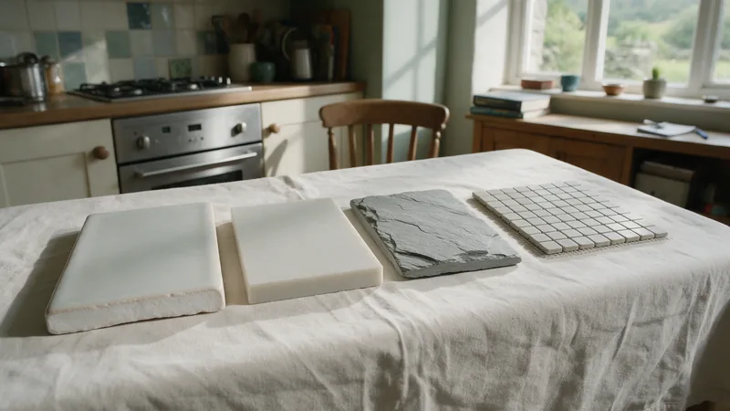
Generated photoFour tiles, four different jobsKendal · Sample Generated photoFalling away from the houseGrange-over-Sands · Sample
Generated photoFalling away from the houseGrange-over-Sands · Sample Generated photoCutting wet, out the backWindermere · Sample
Generated photoCutting wet, out the backWindermere · Sample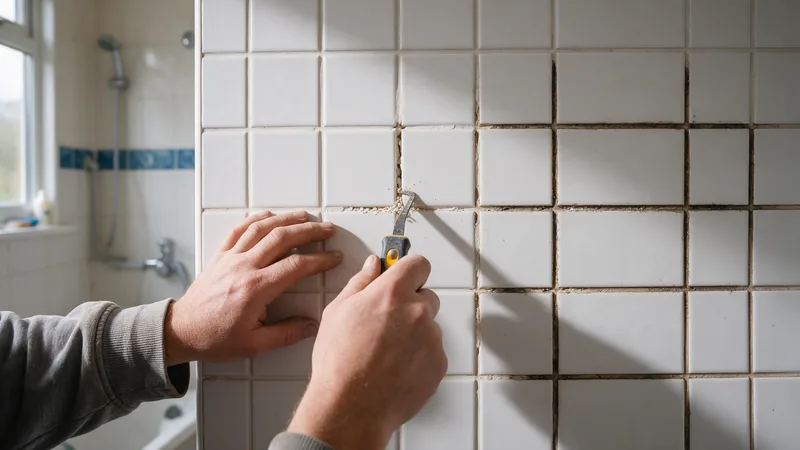
Generated photoOld grout raked right outUlverston · Sample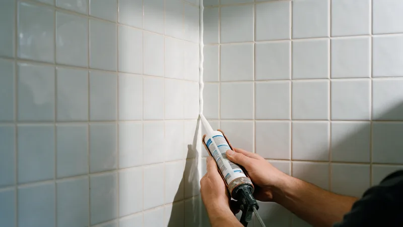
Generated photoThe corner sealed, not groutedKendal · SampleEvery job here is a made up sample with a generated picture. Tap one to see it bigger.
Where we work
Based in the South Lakes.
Based in the South Lakes Sample. These are the towns we cover most. Coverage is a sample for this demo. A bit outside it? Ask anyway, it depends what else is on that week.
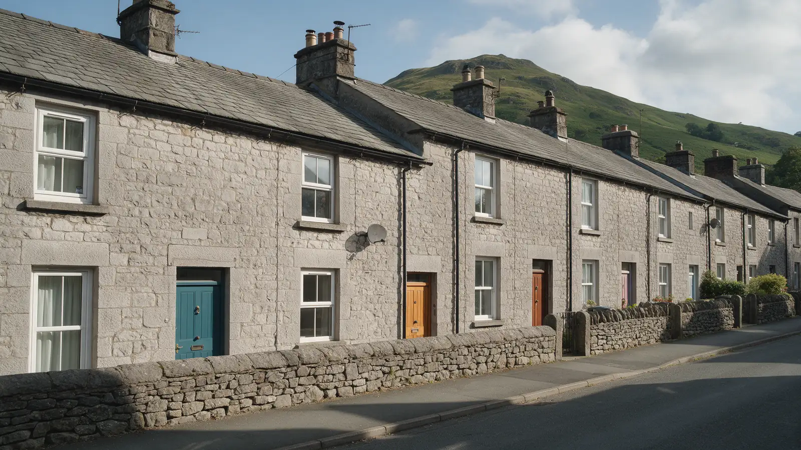
Generated photoWhat people say
Sample reviews.
Sample review
What I did not expect was being shown where the cuts were going to land before anything got stuck on. He put a tape across, marked the wall in pencil and explained why he was starting in the middle rather than the corner. You can see what he meant now it is done. Not one daft little sliver anywhere.
Marie, Kendal
Sample review
Had two others out who both said they would tile over what was there. This one tapped all the way round the bathroom with a screwdriver handle and showed me half the wall was drumming. Took the lot off. Cost more and took longer, and I would rather know.
Owen, Ulverston
Sample review
The grout in our shower had gone black and I thought the whole thing needed doing again. Turned out it just needed raking out and redoing, and the corners wanted sealant rather than grout, which was why they kept splitting. A day and a bit instead of a week.
Sian, Windermere
Sample review
Big porcelain in the kitchen, and the floor was all over the place. He levelled it first, which I had not budgeted for and he had warned me about on the quote as a maybe. No lipped edges anywhere and nothing has moved since.
Phil, Kirkby Lonsdale
Made up for this demo. Tessgate does not exist, so neither do its customers.
Questions
What people ask us first.
Can you tile over existing tiles?
Sometimes, and it is worth ten minutes finding out before anybody quotes. Tap all over the old tiles with a knuckle or the handle of a screwdriver. A solid dull knock means the bed behind is still stuck. A drum means it has let go, and tiling onto that doubles the weight hanging off a bond that has already failed once.
If every tile sounds solid, the grout is sound, nothing is cracked or springy and the surface is flat, then the old tile makes a perfectly good background once it is keyed and primed. The thing nobody mentions is thickness. You are adding roughly eighteen to twenty five millimetres to the wall, and that has to work at the door frame, the window reveal, the sockets and the bath edge. There is a drawing of it in the advice section.
How long until I can use the shower?
Longer than most people expect, and rushing it is the single commonest way a new shower goes wrong. The adhesive has to cure, then the grout, then the sealant, and a shower wall is the one place where none of them get a second chance.
As a rule of thumb on a normal job it is a couple of days after the last bead of sealant goes on before the shower gets used, and we will give you an actual day on the quote rather than a vague one, because it depends on the adhesive, the tile and how warm and airy the room is. A stone tile with a slow setting adhesive on a cold week is a longer wait than porcelain in a warm house.
Do you supply the tiles?
Either way, and plenty of people would rather choose their own, which is fair enough because you are the one looking at them every morning.
If you buy them, order about ten per cent more than the area, fifteen if there are a lot of cuts or the pattern has to line up, and keep the spare. Dye lots vary between batches, so a tile bought six months later to replace a cracked one will not match. Send us a photograph or the details before you order rather than after, because the size and the material change how long the job takes and sometimes change what has to go on the wall first.
Can you tile underfloor heating?
Yes, and a tiled floor is the best surface there is to put over heating, because tile conducts heat well and does not mind the temperature going up and down the way timber does.
What matters is what goes between the heating and the tile. A flexible adhesive rather than the standard stuff, a full bed under every tile so there are no air pockets over a cable, and a decoupling membrane underneath so the floor can move a fraction without dragging the tiles with it. There is a drawing of the whole build up on the natural stone page. We will fix and tile over heating that is already in, and we will work alongside whoever is putting it in, but we do not do the electrical side of it ourselves.
Why is my grout going black?
Nine times out of ten it is mould growing on the surface of the grout rather than anything wrong behind the tile. Grout is porous, a shower is warm and wet, and a bathroom with no extractor and a closed window gives it everything it needs. That sort comes off, and the answer is ventilation plus cleaning rather than retiling anything.
The tenth time it is telling you something. Black that keeps coming back in the same spot after cleaning, black in a straight line along an internal corner, a spongy patch, or a tile that sounds hollow near it, means water is getting past the surface and sitting behind. That is a repair, not a clean. There is a whole piece on how to tell the two apart under Advice.
How long does a bathroom take?
A plain bathroom, walls and floor, is usually most of a week once you count stripping out, preparing, waterproofing, tiling, grouting and letting it cure. A shower enclosure on its own is a couple of days. A splashback is often a day.
What makes it longer is nearly always what turns up when the old tiles come off. A wall that has been wet, a floor that bounces, or plasterboard that has gone soft behind a shower all add a day or two and they cannot be seen from the outside. We will tell you on the quote which of those we think is likely and what each one would add, so it is not a surprise on the Wednesday.
Do you take the old tiles away?
Yes, and it goes on the quote as its own line rather than turning up as a surprise at the end. Old tile is heavy and there is more of it than people think: a small bathroom stripped back to the wall fills more bags than a whole skip's worth of anything else we do.
If you are having a full bathroom out and somebody else is taking the suite, say so, because then it is just our tile and the waste line gets smaller.
How much mess is there?
Stripping old tile off is the dustiest hour of any job we do, and there is no honest way to pretend otherwise. What we do about it is seal the doorway, sheet the floor and the landing, cut outside wherever the weather lets us, and vacuum at the end of every day rather than the end of the job.
Cutting is the other one. A wet saw makes slurry rather than dust, which is why it lives outside the back door. If it genuinely cannot go outside, it goes in a tray and the floor underneath it is sheeted twice. If somebody in the house has a problem with dust, say so when you ring and we will plan round it.
General guidance written for this demo from trade knowledge, not advice on your house.
Advice
Worth reading first.
 Generated photo
Generated photoTiling over tiles: when it is fine and when it is not
Three checks that take ten minutes and tell you whether the old tile can stay. And the thing nobody mentions, which is what the extra thickness does to your door.
Generated photoGrout going black: what it actually means
Usually it is growing on the surface and comes off. Sometimes it is telling you water is getting behind the tile. How to tell which one you have.
Generated photoLarge format tiles: what to know first
Fewer joints, more preparation. Why the quote for a one metre tile is not the same as the quote for a small one, and what you are actually paying for.
About this demo
What this demo shows.
Tessgate is not a real firm. The site is here to show a tiler what Clockwork AI builds, in six parts.
No prices here. What it would cost for your firm is a conversation, not a web page. The Clockwork number is in the bar at the top.
Shall somebody come and put a straightedge on it?
Tell us the room and your postcode and we will come and look at the walls properly before anybody quotes you.